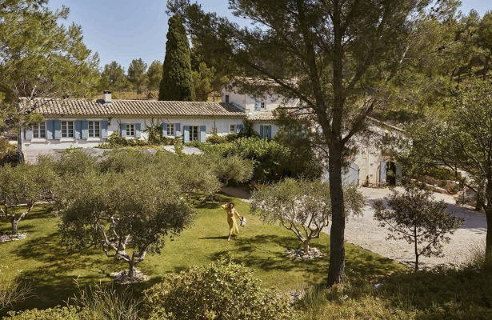

Inès de La Fressange: “O luxo está na simplicidade”
18/06/2022 08h00 - Atualizado 18/06/2022 08h00
Você sempre foi um ícone de elegância. O que é ser chique hoje? É não tentar se adequar a uma imagem de moda, mas se sentir bem naquilo que veste. O luxo está na simplicidade. Isso não quer dizer que a aparência não seja importante, mas ela deve começar na mente. Meu conselho às mulheres é “menos é mais”.
Você adota esse princípio nas suas criações? Começo imaginando uma situação e o que gostaria de vestir. Gosto de roupas confortáveis, feitas de tecido mais sofisticado. Outro dia, procurei um tipo de moletom com zíper e não achei. Pensei: o.k., se não existe é porque posso fazer.
Que marcas chamam sua atenção hoje? Gosto da forma como a Gucci mescla as roupas porque é muito anos 70, rock’n’roll. Também adoro o trabalho de Isabel Marant e de Guillaume Henry, da Patou. Mas nunca me visto com todas as peças de um mesmo designer. Sempre misturo com algo vintage ou novo, feito sob medida, além, é claro, de usar os modelos da minha própria marca.
O que admira na moda atual? A valorização do vintage. Ele tem um caráter único. Vejo os jovens comprando peças retrô e colocando personalidade nelas. Isso é algo novo na história da moda, gostar mais do antigo do que da novidade. É uma verdadeira revolução.
O que já ouviu falar sobre o presidente brasileiro Jair Bolsonaro? Ele tem uma imagem problemática na França. O jeito “naturalmente machista” dele é motivo de piada.
Conhece o estilo da primeira-dama, Michelle Bolsonaro? Ela é desconhecida no meu país. Mas ficou marcado o que o marido dela falou sobre nossa primeira-dama, Brigitte Macron. Uma vergonha. Não se critica a idade ou a aparência da esposa do líder de um país. Isso é muito vulgar. E por que essa senhora permitiu que o marido dissesse algo assim? Como alguém pode ficar com um homem que não é um cavalheiro? É por isso que não lhe damos atenção. Todos aqui conhecem Michelle, mulher de Barack Obama, Jill, esposa de Joe Biden, e Jacinda Ardern, premiê da Nova Zelândia. Mas gente que é apenas a esposa de Joe Biden, e Jacinda Ardern, premiê da Nova Zelândia. Mas gente que é apenas a esposa de um famoso qualquer, como Melania Trump, não desperta interesse na França.